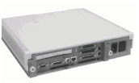

This document is a step-by-step guide to doing an installation of the Debian GNU/Linux system onto a Digital UDB (aka the Multia). There's a lot of documentation floating about, and the aim of this document is to provide a central list of pointers for people wanting UDB installation information. There seem to be rather a lot of UDBs out there, and a significant fraction are running Linux -- maybe there'll be a few more 'cos I wrote this.
There is more information about the Alpha processor somewhere
on Digital
Compaq's web site, and useful intros to the UDB here
and here
(the latter is currently down). You'll also want the Service
Information document (2,216k PDF,
4,949k PostScript),
a free & very useful 100-odd page document (also available on
dead trees from Digital for $85 as part number EK-MULTS-IN.C01).
The prerequisites for following this installation procedure are as follows:
Download the following from the installation disks page (this mirror is faster for me):
To put the disk images on to floppies, run this command on another UNIX box:
Substitute the filenames as appropriate -- see the dd(1) man page for more details. If you only have a DOS box handy, you can use the RAWRITE.EXE command (download either rawrite1.zip or rawrite2.zip). See the Installation HOWTO if you're confused.
If you're using floppies for the base install rather than NFS, download these disk images onto your six floppies as described above: base14-1.bin, base14-2.bin, base14-3.bin, base14-4.bin, base14-5.bin and base14-6.bin.
The UDB firmware includes an ARC console, designed for booting Windows NT, and an SRM console, which is capable of booting Digital UNIX and seems to be more of a diagnostic mode. They're easy to tell apart: the ARC console is white-on-blue, and the SRM is white-on-black.
Once you've got your floppies written, you need to decide which console you want to boot from. I'm not too sure of the pros and cons of the two ways of doing this, but I've had success with the ARC console, so that's the one I use. I believe it may be possible to reflash the machine so that it will load the Linux kernel directly off the disk, but I haven't tried that.
>>>arcSupplementary menu... menu
Set up the system...menu
Switch to OpenVMS or OSF console
Switch to Digital UNIX
Setup menu...
>>> SRM console prompt.
If you've decided to go with the SRM console please skip to that section.
First of all, you might like to check that you're running a recent version of the firmware. Digital releases updates from time to time, together with instructions on performing the upgrade. My machine started off with version 3.5-7 and is now running 4.33. Note that your machine may become unbootable if it all goes horribly wrong.
Secondly, reset the boot configuration, as described on page 41 of the Service Information book (see above for where to get this). I had to do this when I replaced the motherboard battery on my box, but it won't do any harm to know that we're starting from exactly the same position. I'd set the hardware clock to GMT if I were you -- you know where you are with GMT.
Boot from the boot disk as described in the Debian README file, section 2b and onwards. There are a couple of things you might like to do as well: when changing the OSLOADFILENAME setting change the OSLOADOPTIONS setting to be blank.
I haven't explored this option in any depth. If you want to find out more, a good place to start is the SRM Firmware Howto.
Here's how I laid out my partitions (yeah, the disk really is that size, it's not my main machine):
/dev/sda1 Boot, NC Primary Linux ext2 281.50
/dev/sda2 Primary Linux Swap 46.50
/dev/sda3 Primary DOS FAT 12 1.50
In order to get an NFS install option you'll need to configure the network before installing anything. You'll have to scroll the choice box down in order to see the option -- this briefly had me perplexed.
Configure the server to share the directory with the base file in it. Something like this line in /etc/exports might do the trick:
See the exports(5) man page for further information -- setting up NFS is a bit outside the scope of this document.
You can try installing from the appropriate menu item now. If you get an error mentioning the nfs module try this short workaround:
Switch to the installation program's shell (using ctrl-alt-F2) and mount the NFS export by hand:
Change the IP address and directory as appropriate -- see the mount(1) man page for more information. Watch your typing: the delete keys don't work in this shell for some reason.
Return to the installation program with ctrl-alt-F1 and install the operating system `from a mounted disk', giving /mnt as the directory.
I'm not sure whether it was necessary, but I happened to have the rescue and root floppy images in the same directory as the base file, and the install program seemed to be interested in them. YMMV.
I didn't bother trying this, but I assume that the installation program prompts for the floppies in sequence.
Install the OS and kernel and the base system. Don't `make boot floppy', `make linux bootable directly from the hard disk' or `configure PCMCIA support' -- I gather that none of these work at the moment. Reboot the system with the menu item, which should dump you back into MILO. You'll have 30 seconds to press space to interrupt the reboot, and boot with:
Replace with your root partition as appropriate.
Once your machine comes back up you should be on the same track as the bog-standard Intel install, so follow those instructions. Choose a root password and start adding packages like crazy (well, to tell the truth I couldn't go completely crazy, given those 200-odd rather cramped megs...). The dselect tutorial is tedious but obligatory reading at this point.
By the way, a nice fast UK mirror of the Debian distribution can be found at Sunsite Northern Europe.
At this stage you've hopefully got a fully working installation on your computer, with one exception: it won't be able to boot off the hard disk. To fix this you need to install MILO and tell the ARC console where to find it. Download MILO and linload.exe from Digital's ftp site (see the Alpha MIniloader HOWTO for locations). Hopefully you've left a small FAT partition on your disk -- mount this and copy linload.exe and MILO into it:
You now need to reboot and set up ARC to bootstrap first linload.exe then MILO, and finally the kernel. It's not as bad as it sounds, honest. Power-cycle the machine and follow the steps below in the ARC menu system:
Supplementary menu...
Set up the system...
Manage boot selection menu...
Add a boot selection...
New system partition
You'll now be given several options and asked to complete a few fields. The screen should look something like this by the time you've finished:
Select media:
SCSI Hard Disk
Enter SCSI bus number: 0
Enter SCSI ID: 0
Enter partition (must be FAT or NTFS): 3
Enter the osloader directory and name: linload.exe
Is the operating system in the same partition as the osloader:
Yes
Enter the operating system root directory:
Enter a name for this boot selection: Debian GNU/Linux
Do you want to initialize the debugger at boot time:
No
Continue through the menu system as detailed below:
Change a boot selection...
Selection to edit: -- choose the selection
you've just made, ie `Debian GNU/Linux'.
OSLOADOPTIONS to be a MILO boot command, the same as the
one you used earlier:
Setup menu...
Supplementary menu, and save changes...
Boot menu...
Boot Debian GNU/Linux menu item will
hopefully boot your system off the hard disk.
Congratulations, you're finished.
When you build your first kernel you'll need the following information: the network card in the UDB is a 21040 Tulip. The sound card is a Microsoft Sound System compatible, which needs to be set up on IRQ 9, IOBASE 530 and DMA 3 (choose only /dev/dsp and /dev/audio support). The on-board video is a 21030 TGA, so use the TGA X server. The SCSI controller is an NCR 53c810. As previously mentioned, PCMCIA doesn't work at the moment. To use both serial ports you'll need to buy or build a y-shaped cable, because they share a socket. That should be enough for you to be getting on with for the moment.